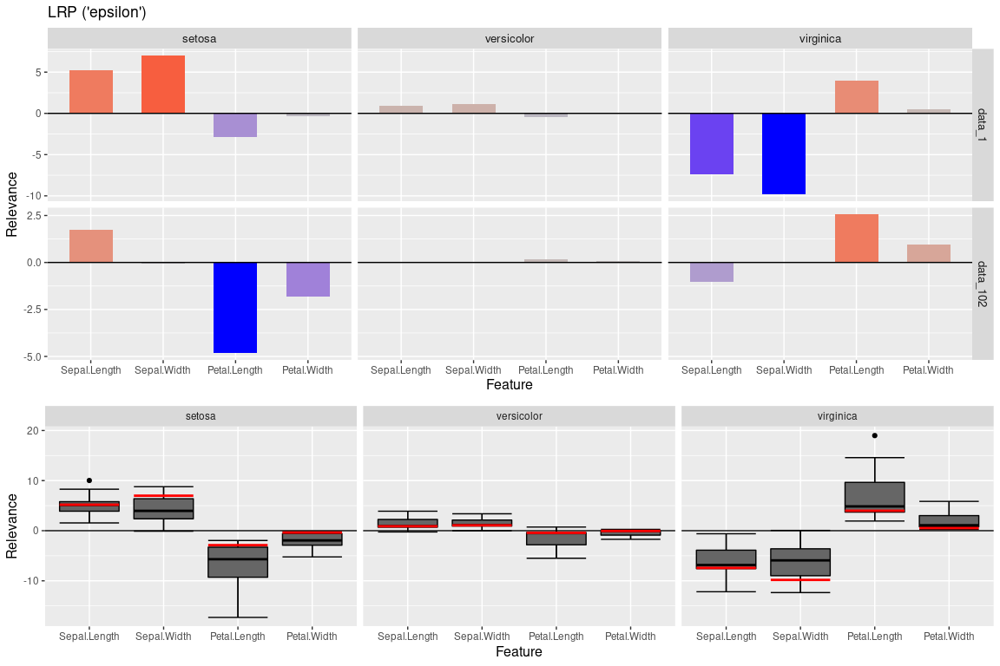
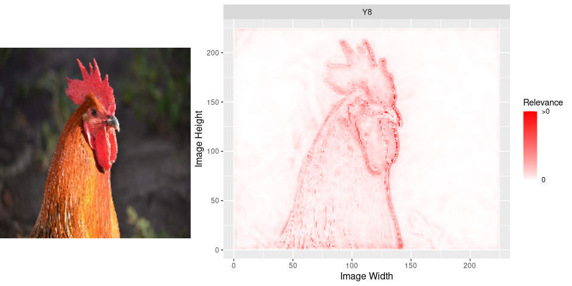

Introduction
innsight is an R package that interprets the behavior and explains individual predictions of modern neural networks. Many methods for explaining individual predictions already exist, but hardly any of them are implemented or available in R. Most of these so-called ‘Feature Attribution’ methods are only implemented in Python and thus difficult to access or use for the R community. In this sense, the package innsight provides a common interface for various methods for the interpretability of neural networks and can therefore be considered as an R analogue to iNNvestigate for Python.
This package implements several model-specific interpretability (Feature Attribution) methods based on neural networks in R, e.g.,
- Layer-wise Relevance Propagation (LRP)
- Including propagation rules: ε-rule and α-β-rule
- Deep Learning Important Features (DeepLift)
- Including propagation rules for non-linearities: rescale rule and reveal-cancel rule
- Gradient-based methods:
- Vanilla Gradient, including Gradient x Input
- Smoothed gradients (SmoothGrad), including SmoothGrad x Input
- Connection Weights
Example results for these methods on ImageNet with pretrained network Vgg16: 
The package innsight aims to be as flexible as possible and independent of a specific deep learning package in which the passed network has been learned. Basically, a neural network of the libraries torch, keras and neuralnet can be passed, which is internally converted into a torch model with special insights needed for interpretation. Currently, the following model and layer types are accepted:
-
torch::nn_sequentialwith layersnn_linear,nn_conv1d,nn_conv2d,nn_max_pool1d,nn_max_pool2d,nn_avg_pool1d,nn_avg_pool2d,nn_dropout,nn_flatten(see torch issue #716 and useclassname = "nn_flatten") -
keras::keras_model_sequentialorkeras::keras_modelwith layerslayer_dense,layer_conv_1d,layer_conv_2d,layer_max_pooling_1d,layer_max_pooling_2d,layer_average_pooling_1d,layer_average_pooling_2d,layer_dropout,layer_flatten
But it is also possible to pass an arbitrary net in form of a named list (see vignette for details).
Installation
The package can be installed directly from CRAN and the development version from GitHub with the following commands (successful installation of devtools is required)
# Stable version
install.packages("innsight")
# Development version
devtools::install_github("bips-hb/innsight")Internally, any passed model is converted to a torch model, thus the correct functionality of this package relies on a complete and correct installation of torch. For this reason, the following command must be run manually to install the missing libraries LibTorch and LibLantern:
torch::install_torch()Note: Currently this can lead to problems under Windows if the Visual Studio runtime is not pre-installed. See the issue on GitHub here or for more information and other problems with installing torch see the official installation vignette of torch.
Usage
You have a trained neural network model on your model input data data. Now you want to interpret individual datapoints or the overall behavior by using the methods from the package innsight, then stick to the following pseudo code:
# --------------- Train your model -----------------
# 'model' has to be an instance of either torch::nn_sequential,
# keras::keras_model_sequential, keras::keras_model or neuralnet::neuralnet
model = ...
# -------------- Convert your model ----------------
# For keras and neuralnet
converter <- Converter$new(model)
# For a torch model the argument 'input_dim' is required
converter <- Converter$new(model, input_dim = model_input_dim)
# ----------------- Apply method -------------------
# Apply global method
result <- Method$new(converter) # no data argument is needed
# Plot the result
plot(result)
# Apply local methods
result <- Method$new(converter, data)
# Plot individual results
plot(result)
# Plot a boxplot of all given data points in argument 'data'
boxplot(result)Examples
1. Iris-Dataset
Train a neural network in torch on the iris-dataset
library(innsight)
library(torch)
data(iris)
# Prepare Data
x <- torch_tensor(as.matrix(iris[, -5]))
y <- torch_tensor(as.integer(iris[, 5]))
# Define Model
model <- nn_sequential(
nn_linear(4, 15),
nn_relu(),
nn_dropout(0.3),
nn_linear(15, 10),
nn_relu(),
nn_dropout(0.3),
nn_linear(10, 5),
nn_relu(),
nn_linear(5, 3),
nn_softmax(2)
)
# Train model
optimizer <- optim_adam(model$parameters, lr = 0.0002)
for (t in 1:2500) {
y_pred <- torch_log(model(x))
loss <- nnf_nll_loss(y_pred, y)
if (t %% 250 == 0) {
cat("Loss: ", as.numeric(loss), "\n")
}
optimizer$zero_grad()
loss$backward()
optimizer$step()
}
#> Loss: 1.034311
#> Loss: 0.8588966
#> Loss: 0.6706114
#> Loss: 0.5762339
#> Loss: 0.5493336
#> Loss: 0.5144928
#> Loss: 0.4707141
#> Loss: 0.3532465
#> Loss: 0.2839047
#> Loss: 0.2687521
# create a Converter for this model
converter <- Converter$new(model, input_dim = c(4),
input_names = list(names(iris[,-5])),
output_names = list(levels(iris[,5])))
# Apply local method LRP with epsilon rule
lrp_eps <- LRP$new(converter, iris[,-5], rule_name = "epsilon")
# Plot the individual result for two datapoints and all classes
p1 <- plot(lrp_eps, data_idx = c(1,102), output_idx = 1:3) +
ggplot2::labs(title = "LRP ('epsilon')")
# Plot the boxplot statistic for all datapoints and all classes
# without a preprocess function
p2 <- boxplot(lrp_eps, output_idx = 1:3, ref_data_idx = 1, preprocess_FUN = identity)
gridExtra::grid.arrange(p1,p2, ncol = 1, layout_matrix = matrix(c(1,1,1,2,2), ncol = 1))
2. Pretrained VGG16 on ImageNet
library(keras)
# Load image
image <- image_load("man/images/imagenet_rooster.png", target_size = c(224,224))
image <- image_to_array(image)
p_image <- grid::rasterGrob(image / 255)
# Preprocess image
x <- array_reshape(image, c(1, dim(image)))
x <- imagenet_preprocess_input(x)
# Get pretrained Vgg16
model <- application_vgg16()
# Convert the model
converter <- Converter$new(model)
# Apply LRP with rule 'alpha_beta' with alpha = 1
lrp_ab <- LRP$new(converter, x,
output_idx = c(8), # 8 is index for class 'cock'
rule_name = "alpha_beta",
rule_param = 1,
channels_first = FALSE)
# We have to flip the y axis before plotting
lrp_ab$result <- torch::torch_flip(lrp_ab$result, c(2))
p_lrp_ab <- plot(lrp_ab)
gridExtra::grid.arrange(p_image, p_lrp_ab, layout_matrix = matrix(c(1,2,2), nrow = 1))
Contributing and Future Work
If you would like to contribute, please open an issue or submit a pull request.
This package becomes even more alive and valuable if people are using it for their analyses. Therefore, don’t hesitate to write me (niklas.koenen@gmail.com) or create a feature request if you are missing something for your analyses or have great ideas for extending this package. Currently, we are working on the following:
-
Extension to non-sequential models in
keraswith multiple in- and outputs, e.g. for mixed data of tabular and image data - More methods, e.g. Grad-CAM, integrated gradients, etc.
- More examples and documentation (contact me if you have a non-trivial application for me)